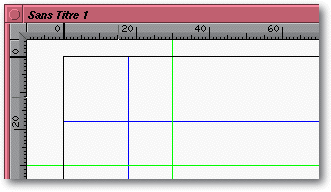

<!-- Documentation Xclamation (c)1994-2000 AXENE contact axene@axene.org>
<HTML>
<HEAD>
<TITLE>Les r&egrave;gles</TITLE>
</HEAD>

<BODY BGCOLOR=#FFFFFF BACKGROUND="Images/back.gif" TEXT=#000000>
<P ALIGN=right>

<P>
<BR>
<BR>
Les r&egrave;gles servent &agrave; graduer horizontalement et
verticalement le plan de travail.
<BR>
<BR>
<HR>
<BR>
<CENTER>

<BR>
<I><SMALL>
Photo d'&eacute;cran&nbsp;: R&egrave;gles d'un document.
</I></SMALL>
</CENTER><P>
<BR>
<HR>
<BR>
<P>

<H2>Graduations</H2>
La graduation est ajust&eacute;e en fonction du facteur d'agrandissement
de la vue. Les graduations sont toujours exprim&eacute;es en
millim&egrave;tres. 
<P>
<B>D&eacute;coupage de l'espace de travail</B>.
<P>
<UL>
  <LI>Verticalement, l'espace est divis&eacute; en 3 secteurs&nbsp;: 
     <UL>
       <LI>le premier secteur au-dessus de la page
       <LI>le second &agrave; l'int&eacute;rieur
       <LI>le troisi&egrave;me en dessous.
     </UL>
     <P>
  <LI>Horizontalement, l'espace est divis&eacute; en 3 secteurs&nbsp;: 
     <UL>
       <LI>le premier secteur &agrave; gauche de la page
       <LI>le second &agrave; l'int&eacute;rieur
       <LI>le troisi&egrave;me &agrave; droite.
     </UL>
     Lorsqu'une page affich&eacute;e est une page double,
     il y en a 4 car le secteur int&eacute;rieur est subdivis&eacute;
     en deux&nbsp;: un pour la page de gauche et un pour celle de droite.
</UL>  
<P>
<BR>
<H2>Origine</H2>
Dans chaque zone, intersection d'un secteur horizontal et vertical,
il est possible de <B>d&eacute;placer l'origine</B> des r&egrave;gles.
Pour cela il faut cliquer avec le bouton gauche de la souris
sur la zone carr&eacute;e, jonction des deux r&egrave;gles,
et maintenir le bouton enfonc&eacute; en d&eacute;pla&ccedil;ant le curseur
&agrave; l'int&eacute;rieur d'une zone. Pour poser la nouvelle 
origine, l&acirc;cher le bouton
de la souris. Pendant le d&eacute;placement d'une
origine, il est possible de cliquer sur le bouton droit de la
souris pour annuler l'op&eacute;ration. 
<P>
Pour <B>r&eacute;initialiser
l'emplacement de toutes les origines</B>, il suffit de cliquer avec
le bouton du milieu de la souris sur la zone carr&eacute;e &agrave; la
jonction des deux r&egrave;gles.
<P>
<BR>
<H2>Rep&egrave;res d'alignements</H2>
A partir des deux r&egrave;gles, il est possible d'<B>&eacute;tirer
des rep&egrave;res d'alignement</B> sur le plan d'affichage. Ces rep&egrave;res
sont des lignes magn&eacute;tiques vertes qui permettent
de positionner les cadres de mani&egrave;re pr&eacute;cise.
Depuis la r&egrave;gle horizontale on peut tirer
des lignes horizontales et depuis la r&egrave;gle verticale on
peut tirer des lignes verticales. Pour d&eacute;poser
ces rep&egrave;res d'alignement il faut cliquer en maintenant
le bouton gauche de la souris enfonc&eacute; sur une des deux
r&egrave;gles, d&eacute;placer le curseur souris sur le plan d'affichage
et rel&acirc;cher le bouton de la souris. Il est possible de cliquer
avec le bouton droit de la souris, avant de l&acirc;cher le bouton
gauche, pour annuler l'op&eacute;ration. En fonction de la position
o&ugrave; est l&acirc;ch&eacute; le rep&egrave;re d'alignement
-&nbsp;&agrave; l'int&eacute;rieur ou &agrave; l'ext&eacute;rieur de
la page&nbsp;-, le rep&egrave;re d'alignement ira d'un bord de la page
&agrave; l'autre ou du bord du plan d'affichage &agrave; l'autre.
<P>
Une fois un rep&egrave;re d'alignement pos&eacute; sur le plan
d'affichage, il est possible de le d&eacute;placer et de le d&eacute;truire.
Pour <B>d&eacute;placer un rep&egrave;re d'alignement</B>, il suffit
d'approcher le curseur souris pr&egrave;s d'une ligne verte, de
cliquer en maintenant le bouton gauche de la souris enfonc&eacute;,
de d&eacute;placer la ligne &agrave; l'int&eacute;rieur du plan
d'affichage, puis de rel&acirc;cher au nouvel emplacement. Pour
<B>d&eacute;truire un rep&egrave;re d'alignement</B>, il suffit de le
prendre comme pour le d&eacute;placement et de l&acirc;cher le
rep&egrave;re &agrave; l'ext&eacute;rieur du plan d'affichage
quand le spectre de la ligne n'est plus visible. A nouveau, il
est possible de cliquer avec le bouton droit de la souris en cours
de d&eacute;placement pour annuler l'op&eacute;ration.
<P>
Les rep&egrave;res d'alignement peuvent &ecirc;tre affich&eacute;s
ou cach&eacute;s &agrave; partir du 
<A HREF="Menu_View.html#ruler_marks_menu_entry">menu 
<I>&quot;Affichage&quot;</I></A><I>.</I>
<P>
<BR>
<HR>
<P ALIGN=right>
<P>
</BODY>
</HTML>
